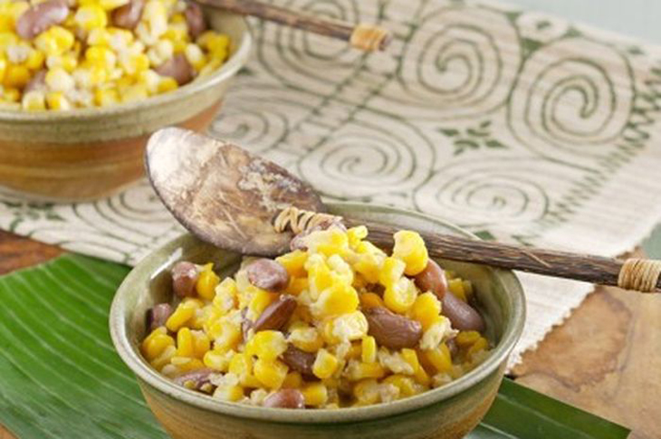
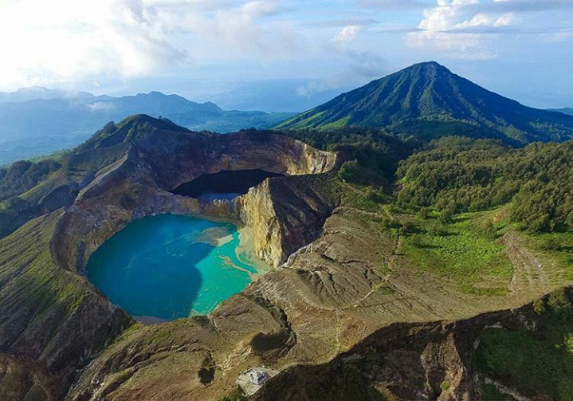

Pulau Komodo adalah sebuah pulau yang terletak di Kepulauan Nusa Tenggara. Pulau Komodo dikenal sebagai habitat asli hewan komodo. Pulau ini juga merupakan kawasan Taman Nasional Komodo yang dikelola oleh Pemerintah Pusat. Pulau Komodo berada di sebelah timur Pulau Sumbawa, yang dipisahkan oleh Selat Sape.
Secara administratif, pulau ini termasuk wilayah Kecamatan Komodo, Kabupaten Manggarai Barat, Provinsi Nusa Tenggara Timur, Indonesia. Pulau Komodo merupakan ujung paling barat Provinsi Nusa Tenggara Timur, berbatasan dengan Provinsi Nusa Tenggara Barat.
Di Pulau Komodo, hewan komodo hidup dan berkembang biak dengan baik. Hingga Agustus 2009, di pulau ini terdapat sekitar 1300 ekor komodo. Ditambah dengan pulau lain, seperti Pulau Rinca dan dan Gili Motang, jumlah mereka keseluruhan mencapai sekitar 2500 ekor. Ada pula sekitar 100 ekor komodo di Cagar Alam Wae Wuul di daratan Pulau Flores tapi tidak termasuk wilayah Taman Nasional Komodo.
Selain komodo, pulau ini juga menyimpan eksotisme flora yang beragam kayu sepang yang oleh warga sekitar digunakan sebagi obat dan bahan pewarna pakaian, pohon nitak ini atau sterculia oblongata di yakini berguna sebagai obat dan bijinya gurih dan enak seperti kacang polong.
Pulau Komodo juga diterima sebagai Situs Warisan Dunia UNESCO, karena dalam wilayah Taman Nasional Komodo, bersama dengan Pulau Rinca, Pulau Padar dan Gili Motang

Jagung Bose
Makanan Khas
NASI dan orang Indonesia seperti sejoli yang tak terpisahkan. Saking lekatnya, ada ungkapan yang menyebut 'orang Indonesia belum makan kalau belum menyentuh nasi'. Namun, hal itu sepertinya enggak berlaku untuk orang Flores.
Di 'Tajung Bunga' di gugusan Sunda Kecil itu, warganya memiliki jagung sebagai alternatif makanan pokok. Tak menggherankan jika berbagai olahan jagung nan nikmat berasal dari daerah itu. Salah satuya ialah jagung bose.Dari asal usul nama, jagung bose memiliki arti jagung yang dilunakkan. Pembuatannya pun cukup panjang. Biji jagung terlebih dahulu ditumbuk dan dicampur air. Setelah terkelupas, barulah jagung siap dimasak. Biasanya jagung dimasak dengan kacang merah agar kuah jagung nantinya menampakkan warna yang menarik. Kuah jagung bose terbuat dari santan yang sudah melewati tiga kali peras.Tak hanya tampil polos, jagung bose juga kerap dicampur daging se'i. Bahkan, jagung bose juga dimakan sebagai pengganti nasi yang dihidangkan bersama ikan bakar.

Danau Kelimutu
Destinasi
Gunung Kelimutu adalah gunung berapi yang terletak di Pulau Flores, Provinsi NTT, Indonesia. Lokasi gunung ini tepatnya di Desa Pemo, Kecamatan Kelimutu, Kabupaten Ende. Gunung ini memiliki tiga buah danau kawah di puncaknya. Danau ini dikenal dengan nama Danau Tiga Warna karena memiliki tiga warna yang berbeda, yaitu merah, biru, dan putih. Walaupun begitu, warna-warna tersebut selalu berubah-ubah seiring dengan perjalanan waktu.Kelimutu merupakan gabungan kata dari "keli" yang berarti gunung dan kata "mutu" yang berarti mendidih. Menurut kepercayaan penduduk setempat, warna-warna pada danau Kelimutu memiliki arti masing-masing dan memiliki kekuatan alam yang sangat dahsyat.Para penduduk di sekitar Danau Kelimutu percaya, bahwa pada saat danau berubah warna, mereka harus memberikan sesajen bagi arwah orang - orang yang telah meninggal.